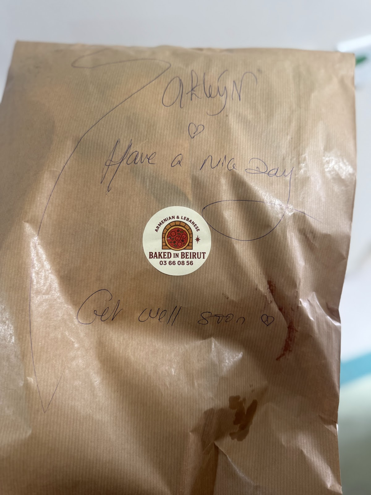

Sahteyn 🫶 — it's handwritten
Baked In Beirut is the smell of Pasteur Street at 7:30 in the morning: manousheh and lahm bi ajin sliding out of the oven, coffee on the counter, and a perfect 5.0 rating from everyone who's found it. Every delivery bag leaves with a handwritten note — 'Sahteyn, have a nice day' — which tells you most of what you need to know about the people inside.
The oven does Lebanese mornings and Armenian afternoons — za'atar and cheese on one side, lahm bi ajin and sujuk on the other. Gemmayze gets both, from 7:30 sharp.

the famous bag ↑